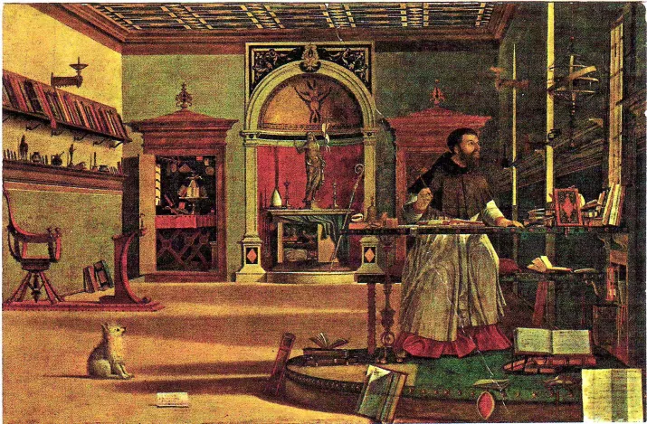
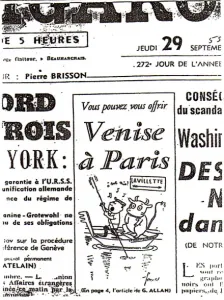
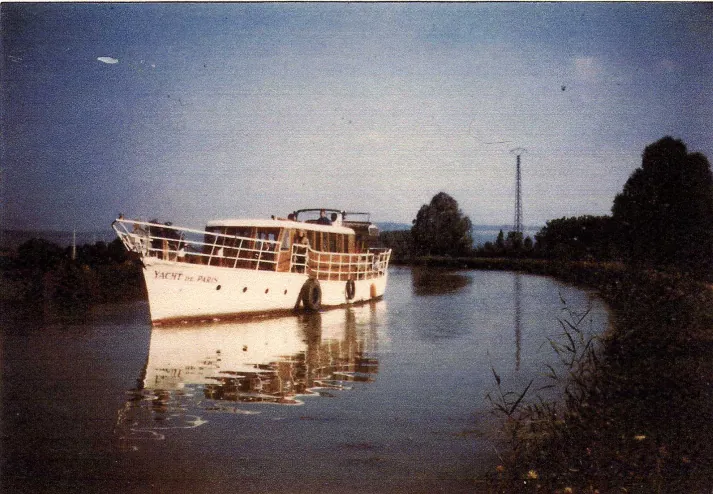

Préface
Une rencontre qui nous a beaucoup frappés au cours de notre vie de marinier est celle de… Saint Augustin, rencontré à Venise, sur le rio Saint Antonino, au collège des Esclavons. Il s'agit d'un tableau, peint en 1500, par Carpaccio.
Le peintre n'a pas connu le Père de l'Église (qui vivait 1000 ans plus tôt !) et, suivant l'usage de l'époque, il a représenté un contemporain anonyme étudiant, parmi les livres de sa bibliothèque.

Le personnage tient sa plume en l'air et son visage est braqué vers la fenêtre. Ce qui se passe à l'extérieur le passionne beaucoup plus que son bouquin…
Ainsi va l'historien, le documentaliste, qui passe une partie de sa vie à la Bibliothèque et aux Archives Nationales… Mais dès que quelque chose l'attire dehors, il se précipite, prêt à parcourir le monde pour voir « comment c'est fait » et « comment ça marche ». C'est un peu ce qui nous est arrivé ! Notre érudition tient beaucoup de nos lectures. Et beaucoup plus encore de nos voyages en Europe.
Ma première carte de la Bibliothèque Nationale est de 1948. À cette époque, j'étais journaliste, Chef du service « Archives-Documentation » de l'Agence France-Presse. Mais en 1946, j'avais organisé une mission préhistorique… au Sahara.
Nous n'avons – mon épouse, Marie, et moi – aucun antécédent, aucun parent marinier. Nous sommes entrés… on pourrait dire « par effraction » dans une profession où tout le monde se tient, de père en fils. L'amarre passe de la main calleuse du patron à la menotte du moussaillon.
Ces gens sont, à la manœuvre, d'une extrême habileté – qui suscite notre admiration. Ils ont l'atavisme. Ils ont l'eau d'écluse dans le sang. Tandis que nous n'avions que… la vocation. Nous avons commencé par toutes les fausses manœuvres qu'il est possible de faire sur un bateau, mais avec un peu de passion et de persévérance, avec l'aide de quelques copains mariniers… on y arrive très bien.
Mon premier embarquement – pour une vraie croisière où on couche sur le bateau – remonte à 1955, sur le Göta Canal, en Suède. (Le bateau datait de 1874. D'ailleurs il est toujours en service. Nous y avons embarqué à nouveau en 2000).
Notre premier métier était : la sauvegarde, la restauration des monuments. Nous avons fondé des associations : « Connaître Paris », « Vieilles pierres et Urbanisme », « Arts et Voyages », « Les moulins de France », « L'Union des associations de techniciens pour la Sauvegarde des monuments »…
Ce n'étaient pas des entreprises commerciales, mais nous sommes bien payés, aujourd'hui, en voyant des moulins… de vieilles maisons… qui ne seraient pas là, ou « pas comme ça » sans notre intervention.
Nous avons organisé, pendant quarante ans, des excursions, des voyages, en France et en Europe, en car et en bateau. Notre premier livre (consacré à l'Île-de-France) a été publié en 1954. Cette année-là, nous nous sommes opposés à la destruction, par la ville de Paris, du canal Saint-Martin dont quelques politiciens voulaient faire un boulevard reliant la gare de l'Est à la gare de Lyon.

Pour faire visiter ce monument aux Parisiens, il fallait des bateaux. D'autant plus qu'une partie du canal est souterraine. Nous avons fait venir des petits bateaux de la Marne. La première excursion, annoncée par la presse, attira tant de monde qu'il fallut appeler la police pour dégager le quai.
Quelques années plus tard, les bateliers de la Marne ne voulaient plus venir à Paris : le tourisme fluvial s'était développé sur leur rivière.
Fallait-il renoncer ? Nous avons créé le « Yacht de Paris » transformant un ancien garde-côte qui avait une histoire : C'était le premier bateau en acier, lancé (en 1931) par le célèbre dessinateur de voiliers : André Mauric.
Le combat contre la ville de Paris a duré 18 ans. La destruction du canal a été votée, budgétée… et puis, il ne s'est rien passé. De nombreuses associations nous avaient suivis. Le canal est aujourd'hui l'un des monuments les plus visités de Paris.
En 1964, le « Yacht de Paris » menait campagne sur le canal de Bourgogne, qui a failli disparaître dans la construction d'un bout d'autoroute. Nous avons soutenu l'émission télévisée « Chef d'œuvre en péril » jusqu'à Venise. Nous avons passé 23 ans à bord, multipliant aussi les embarquements sur les bateaux à passagers qui sillonnent les rivières d'Europe.
De la Mer Blanche à la Mer Noire, de la Garonne à la Volga.

Nous avons, certes, appris le métier de marinier, de Capitaine, mais nous avons surtout été captivés par les spectacles de l'eau et avant tout par l'extraordinaire variété des ouvrages de navigation. Nous sommes allés à peu près partout où il y avait un chemin d'accès sur la trace d'un canal disparu.
On a fait des milliers et des milliers de photos, rempli une foule de carnets de notes, rédigé tant d'articles, de récits, consulté tant de plans et de rapports dans les archives départementales et autres…, jusqu'à former en quelque 25 ans, un Centre de documentation capable de répondre à la plupart des questions historiques ou techniques sur les voies d'eau. (En se limitant toutefois à l'Europe car il aurait fallu plusieurs vies pour faire le tour du monde sur les eaux navigables)
De là l'idée de réunir ces notes si variées en bouquets à peu près cohérents où les navigateurs, les constructeurs de canaux trouveront réponses à leurs questions.
Jacques de La Garde
30 12 2008
Note de l'auteur : cet ouvrage comporte 6 tomes.
Nos Documents
Consultez ici nos ouvrages.
Contact
N'hésitez pas à nous contacter pour toute information.